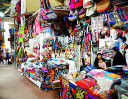

Sitios Turísticos de Chíquiza
Parque Natural Iguaque
Un hermoso parque que alberga el famoso Páramo de Iguaque, ideal para senderismo y observación de flora y fauna.
Laguna de Iguaque
Un lugar sagrado para los muiscas, rodeado de mitos y leyendas, perfecto para caminatas y conexión con la naturaleza.
Templo Doctrinero San Isidro Labrador

Una iglesia colonial que destaca por su arquitectura y su importancia histórica en la región.
Miradores
Hay varios puntos panorámicos desde donde se puede disfrutar de vistas espectaculares del paisaje andino.
Cascadas
En los alrededores, hay varias cascadas que son ideales para disfrutar de la naturaleza y hacer picnics.
Mercados Artesanales
Espacios donde se pueden encontrar artesanías y productos locales, perfectos para conocer la cultura de Chíquiza.